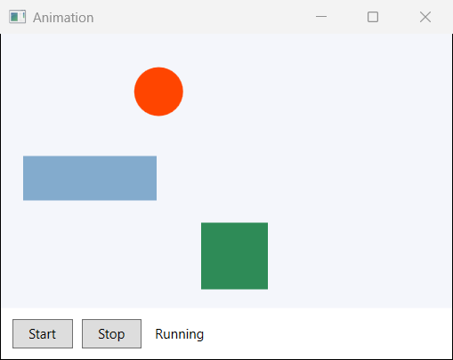

WPF animation
In WPF you do not move a shape with a timer and a loop. You say "change this property from this value to that value in two seconds" and WPF does it on every frame. This lesson moves, fades and rotates shapes with animations.
What you will learn#
- the idea of an animation: a property, a start, an end and a duration,
DoubleAnimation,Duration,AutoReverseandRepeatBehavior,- easing, so that movements start and stop smoothly,
- animating a position (
Canvas.Left),Opacityand a rotationAngle, - stopping an animation,
- testing an animated window.
Timer or animation?#
In the tutorial Drawing and animation a timer changes the position 50 times a second and the program redraws. In WPF the rendering system knows about time: you describe the change once and WPF calculates every frame, uses the graphics card and keeps the window responsive. You animate dependency properties: Opacity, Width, Canvas.Left, Angle, colors...
The program#
# WPF animation - move, fade and rotate with animations that WPF runs for you
load "dotnet.ring"
using {
"System"
"System.Windows"
"System.Windows.Controls"
"System.Windows.Media"
"System.Windows.Media.Animation"
"System.Windows.Shapes"
"System.Windows.Threading"
}
oWindow = ""
oBall = ""
oBox = ""
oSpin = ""
oStatus = ""
oCheck = ""
func main
# 1. The window: a canvas (free positions) with three shapes, and two buttons
cXaml = '<Window xmlns="http://schemas.microsoft.com/winfx/2006/xaml/presentation" xmlns:x="http://schemas.microsoft.com/winfx/2006/xaml" Title="Animation" Width="420" Height="330">'
cXaml += '<Grid><Grid.RowDefinitions><RowDefinition Height="*"/><RowDefinition Height="Auto"/></Grid.RowDefinitions>'
cXaml += '<Canvas Background="#f4f6fb">'
cXaml += '<Ellipse x:Name="ball" Fill="OrangeRed" Width="44" Height="44" Canvas.Left="10" Canvas.Top="30"/>'
cXaml += '<Rectangle x:Name="box" Fill="SteelBlue" Width="120" Height="40" Canvas.Left="20" Canvas.Top="110"/>'
cXaml += '<Rectangle Fill="SeaGreen" Width="60" Height="60" Canvas.Left="180" Canvas.Top="170" RenderTransformOrigin="0.5,0.5"><Rectangle.RenderTransform><RotateTransform x:Name="spin" Angle="0"/></Rectangle.RenderTransform></Rectangle>'
cXaml += '</Canvas>'
cXaml += '<StackPanel Grid.Row="1" Orientation="Horizontal" Margin="10"><Button x:Name="start" Content="Start" Padding="14,4" Margin="0,0,8,0"/><Button x:Name="stop" Content="Stop" Padding="14,4" Margin="0,0,12,0"/><TextBlock x:Name="status" VerticalAlignment="Center"/></StackPanel>'
cXaml += '</Grid></Window>'
oWindow = wpfXaml(cXaml)
oBall = wpfFind(oWindow,"ball")
oBox = wpfFind(oWindow,"box")
oSpin = wpfFind(oWindow,"spin")
oStatus = wpfFind(oWindow,"status")
wpfFind(oWindow,"start").setClickEvent("startAnimations()")
wpfFind(oWindow,"stop").setClickEvent("stopAnimations()")
startAnimations()
# in a self test a timer looks at the shapes after a short time, and closes the window
if wpfSelfTest()
oCheck = new DispatcherTimer() {
Interval = new TimeSpan().FromMilliseconds(900)
setTickEvent("selfTest()")
}
oCheck.Start()
ok
wpfRun(oWindow)
wpfEnd()
# An animation says: change this property from a value to a value, in this time. WPF does the rest on every frame.
func startAnimations
# the ball: Canvas.Left from 10 to 340 in 2 seconds, back again (AutoReverse), for ever, slowing down at the ends
oMove = new DoubleAnimation()
oMove.SetProp("From",10) # From and To can be empty in WPF, so they are set by name
oMove.SetProp("To",340)
oMove.Duration = new Duration().@New([ :timeSpan = new TimeSpan().FromSeconds(2) ])
oMove.AutoReverse = True
oMove.RepeatBehavior = new RepeatBehavior().Forever
oEase = new SineEase()
oEase.EasingMode = "EaseInOut"
oMove.EasingFunction = oEase
oBall.BeginAnimation([ :dp = new Canvas().LeftProperty, :animation = oMove ])
# the box: Opacity from 1 to 0.1 and back, in 1.5 seconds
oFade = new DoubleAnimation()
oFade.SetProp("From",1)
oFade.SetProp("To",0.1)
oFade.Duration = new Duration().@New([ :timeSpan = new TimeSpan().FromSeconds(1.5) ])
oFade.AutoReverse = True
oFade.RepeatBehavior = new RepeatBehavior().Forever
oBox.BeginAnimation([ :dp = oBox.OpacityProperty, :animation = oFade ])
# the green square: the angle of its rotation from 0 to 360 in 3 seconds, a new turn each time
oTurn = new DoubleAnimation()
oTurn.SetProp("From",0)
oTurn.SetProp("To",360)
oTurn.Duration = new Duration().@New([ :timeSpan = new TimeSpan().FromSeconds(3) ])
oTurn.RepeatBehavior = new RepeatBehavior().Forever
oSpin.BeginAnimation([ :dp = oSpin.AngleProperty, :animation = oTurn ])
oStatus.Text = "Running"
# an animation is stopped by starting "no animation" (the .NET null) on the property
func stopAnimations
oBall.BeginAnimation([ :dp = new Canvas().LeftProperty, :animation = dnNull() ])
oBox.BeginAnimation([ :dp = oBox.OpacityProperty, :animation = dnNull() ])
oSpin.BeginAnimation([ :dp = oSpin.AngleProperty, :animation = dnNull() ])
oStatus.Text = "Stopped"
func selfTest
oCheck.Stop()
nLeft = oBall.GetValue(new Canvas().LeftProperty)
nOpacity = oBox.GetValue(oBox.OpacityProperty)
nAngle = oSpin.Angle
dnAssert("the ball has moved right",nLeft > 20 and nLeft < 340,True)
dnAssert("the box is fading",nOpacity < 1 and nOpacity >= 0.1,True)
dnAssert("the square has turned",nAngle > 0,True)
stopAnimations()
dnAssert("the status says stopped",oStatus.Text,"Stopped")
oWindow.Close()
This program uses a generic function (dnNull) where a class cannot be used. The lesson The generic functions explains them.
How it works#
The window#
The window is described in XAML (the tutorial WPF): a Canvas for free positions with an ellipse, a rectangle and a second rectangle that has a RotateTransform named spin as its RenderTransform; and a row with two buttons and a text.
One animation#
oMove = new DoubleAnimation()
oMove.SetProp("From",10)
oMove.SetProp("To",340)
oMove.Duration = new Duration().@New([ :timeSpan = new TimeSpan().FromSeconds(2) ])
oMove.AutoReverse = True
oMove.RepeatBehavior = new RepeatBehavior().Forever
oBall.BeginAnimation(new Canvas().LeftProperty,oMove)A DoubleAnimation changes a number. From and To are optional values in WPF, so they are set by name with SetProp. Duration takes a TimeSpan. AutoReverse makes the ball come back, RepeatBehavior.Forever repeats. BeginAnimation(property, animation) attaches the animation to a property of an element; LeftProperty, OpacityProperty and AngleProperty are the properties as objects.
Easing#
A straight animation starts and stops abruptly. An easing function changes the speed: SineEase with EasingMode = "EaseInOut" starts slowly, is fastest in the middle and slows down at the end, which looks natural. Others: BounceEase, ElasticEase, CubicEase, QuadraticEase.
Three properties#
The ball animates Canvas.Left, the box animates Opacity (1 to 0.1) and the green square animates the Angle of its rotation from 0 to 360. The same pattern fits any numeric property.
Stopping#
BeginAnimation(property, dnNull()) starts "no animation" on the property: the animation stops. (dnNull() is the .NET null.)
Testing#
You cannot take a picture in a test, but you can ask for values. In a self test a DispatcherTimer waits 900 milliseconds and then reads the current values (GetValue(property), or the Angle attribute): the ball must be somewhere between 20 and 340, the box must be fading and the square must have turned. Then the test stops the animations and closes the window.
WPF can also animate in XAML with a Storyboard. Doing it in code, as here, lets you create the animations from data: one for each item of a list, for example.
What you learned#
DoubleAnimationwithFrom,To,Duration,AutoReverseandRepeatBehavior,- easing,
BeginAnimationand stopping withdnNull(),- testing with a timer and the current values.
Exercises#
- Make the ball bounce with
BounceEaseandEasingMode = "EaseOut". - Animate the
Widthof the blue box. - Animate a color:
ColorAnimationonFill.Colorof the ball. - Add a slider that changes the speed (the
Duration) of the ball.
Where to go next#
This was the last tutorial of the chapter WPF. The next chapter is Projects with windows: it starts with A project: a to-do list that remembers. The Tutorials page lists all the chapters, and you can start any of them.